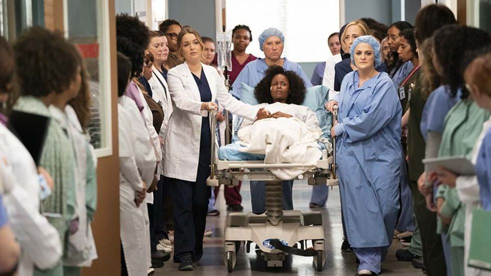
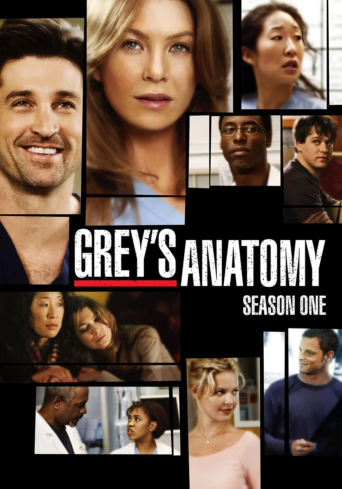

NOTICIAS

La protagonista de esta famosa serie es meredith grey, se formara para ser cirugana general en el grey sloan memorial.

Además de ser una serie donde se observan varias operaciones anatomía de grey también trata temas importantes como la racismo, adopción.... en este caso vemos un caso de violencia de genero

La serie consta de 19 temporadas y actualmente se esta rodando otra

El hospital de anatomia de grey esta ubicado en seattle, este hospital recibido el nombre de grey sloan memorial
PAGINA ANATOMIA DE GREY
Telefonos: 974 424 194 977 470 887 358 565 355
Mail: amatomiadegrey@gmail.com greysloanmemorial@anatomia.es
Paseo de la Anatomia s/n Fraga 22520
Copyright © 2022 · Mail Lifestyle Pro on Genesis Framework · WorkPress · Iniciar sesión